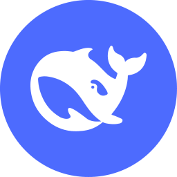
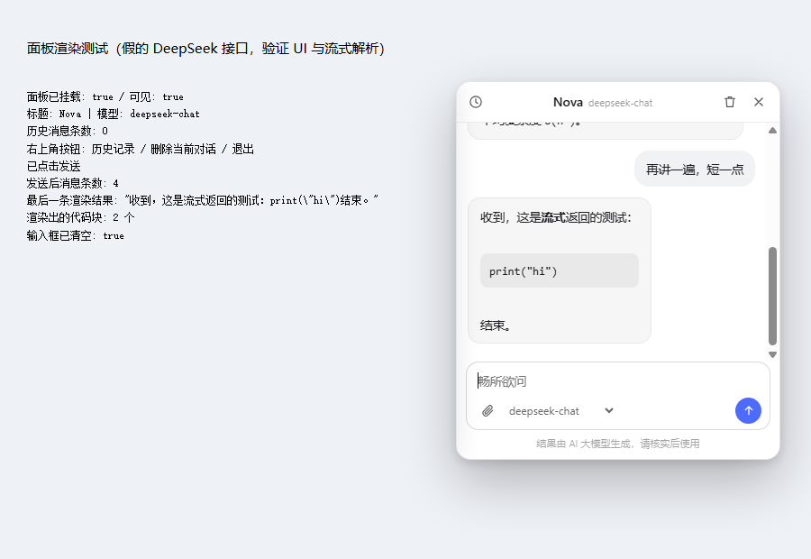
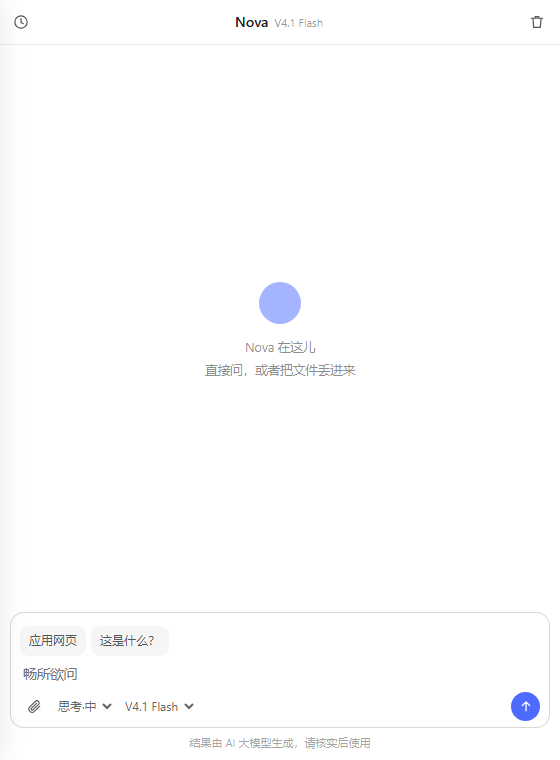
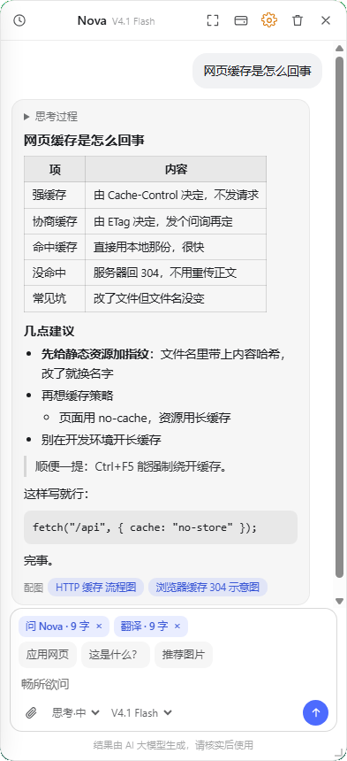
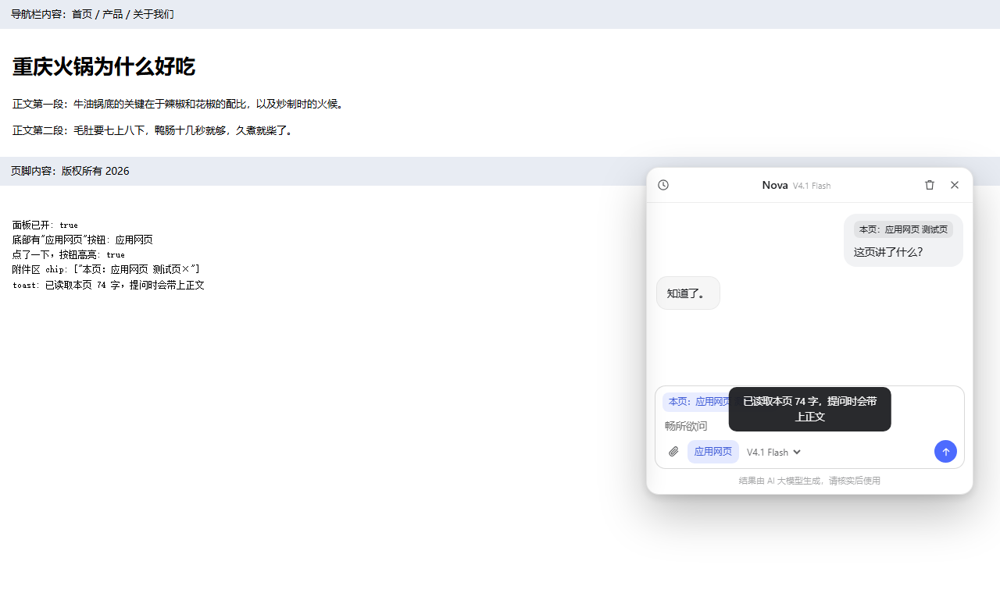
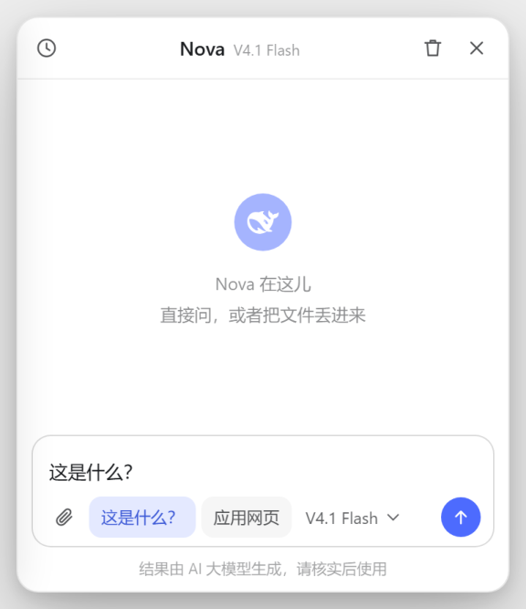
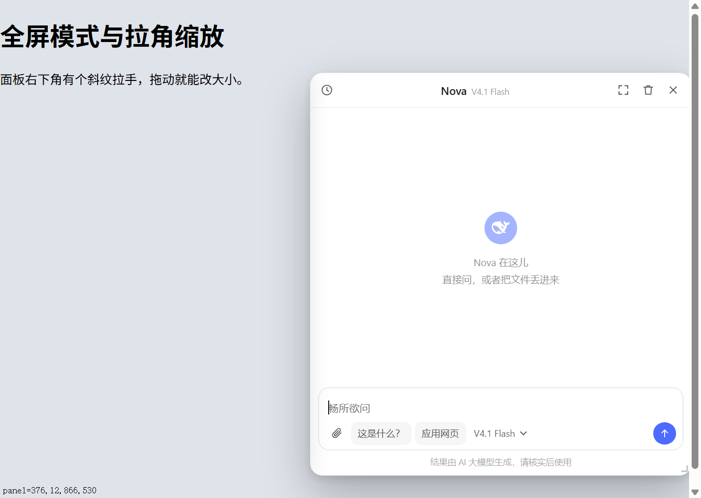
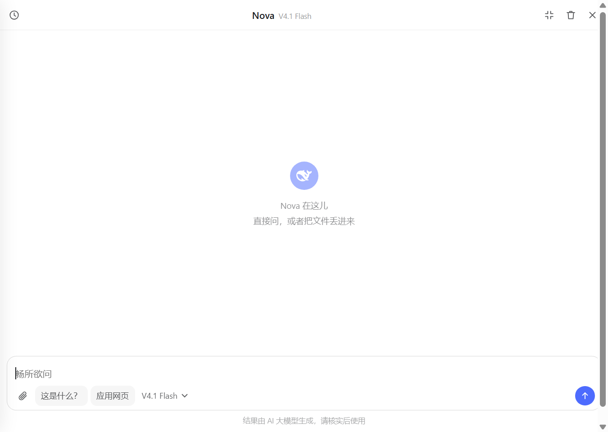

Chrome 扩展（Manifest V3）。一个能拖动、带惯性的鲸鱼小球，双击开对话面板，读网页、看图、拖文件进来直接问。
chrome://extensions，开启开发者模式，点「加载已解压的扩展程序」，选 floating-ball 这个文件夹（就是你 clone / 解压出来的那个）⚙（或扩展详情页的「扩展选项」）打开设置页，把 key 粘进去点保存。代码里不写 key。F5。球会出现在窗口右侧、屏幕高度约 60% 的位置。
DeepSeek 鲸鱼 + 品牌蓝。拖动跟手，松手带惯性，鼠标碰到放大到 1.15 倍，用力丢向边缘会被吸住、弹三次贴边。

双击球打开。左上历史记录，右上 ¥ 查余额 + ⚙ 设置 + 删除，输入框上方三个功能按钮（应用网页 / 这是什么？/ 推荐图片），底部附件 + 思考强度 + 模型选择，流式吐字。开着「推荐图片」时回答末尾会多一行可点的配图搜索词（下面自检页那张图里就有）。

新标签页、设置页、内置 PDF 阅读器这些球进不去的地方，点一下工具栏图标就能聊：右侧开一条栏，切标签页也不关。同一份面板代码，只是铺满整栏。

模型答的 markdown 会真的渲染出来：表格、标题、有序/无序列表（含嵌套）、引用、代码块。不渲染的话表格会原样显示成 |---|---|。

让对话读当前页面：整页正文 + 图片，或只读屏幕可见区（含一张真实截图）。发送那一刻才抓取。

输入框上方那一行里可点的小按钮，点一下把「这是什么？」填进输入框，再点一下收回去。

拖右下角斜纹拉手缩放，尺寸记得住（下次打开还是这套）；按住顶栏也能挪位置，但面板位置每次按球重算 —— 它是"跟着球出现"的。

右上角 ⛶ 铺满整个视口，方便读长回答；再点一下回到原样，Esc 先退全屏。
| 文件 | 作用 |
|---|---|
manifest.json | 清单：名称、图标、权限、脚本注入规则、设置页入口 |
config.js | 你要动的文件：模型列表、思考档位、界面人设（API Key 不在这儿） |
options.html + options.js | 设置页：API Key 在这儿配，存在浏览器里，代码里不留 |
panel.js | 对话面板：界面、历史记录、流式请求、读网页、附件、取 Key |
content.js | 悬浮球本体：拖动、惯性、吸附、双击开面板、接收拖拽 |
sidepanel.html + sidepanel.js | 侧边栏入口：点工具栏图标，右侧栏里跑同一个面板 |
background.js | 后台脚本，三件事：截图、工具栏图标开侧栏、首装提醒配 Key |
icons/ | 工具栏图标 16 / 48 / 128 |
README.md | 完整说明文档（安装、参数、实现细节） |
docs/ | 本页 + 截图 + 三个自检页 + 图标源文件，不影响运行，可整包删除 |
只有上面 9 个文件加 icons/ 是运行必需的。要打包上架，`README.md` 和 `docs/` 可以先排除。